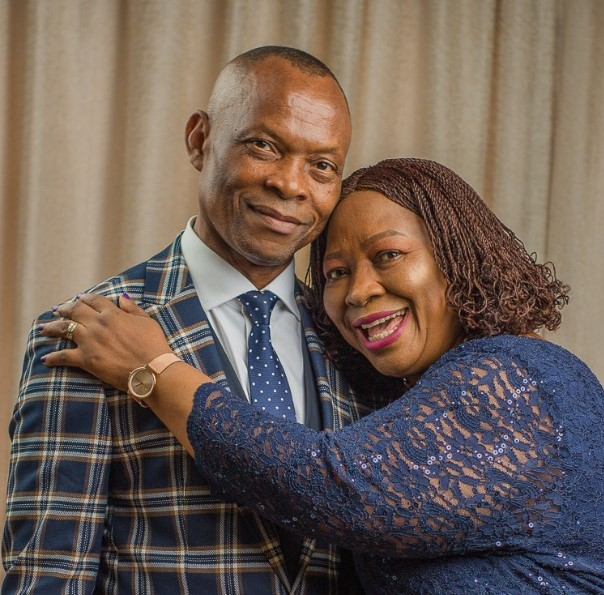

MEET
THOMAS AREMU
And I will give you pastors according to mine heart,
which shall feed you with knowledge and
understanding.
Jer. 3 : 15

Born on March 18, 1957, in Oyo Town, Oyo State, Thomas Olayiwola Aremu grew up with values that would shape his extraordinary journey, hard work, faith, and an unwavering commitment to his calling. As a young man, Thomas pursued a career in accounting. By 1984, at just 27 years old, he achieved the milestone of becoming a Chartered Accountant. It was a remarkable achievement, but what made it truly special was his unshakable belief in God. He trusted that God’s hand was guiding him, and this faith propelled his career forward, with promotions coming swiftly. Within 18 months, he rose from Grade Level-8 to Grade Level-12, earning respect
not just for his skill but also for his integrity. In 1986, a life-changing moment came when Bishop David Oyedepo visited his home in Sokoto. At the time, Thomas and his wife were trusting God for a child. During the visit, Bishop Oyedepo declared that their waiting was over. That very month, his wife conceived their first daughter, Faith. This miraculous moment not only ended their waiting but also set the tone for a life filled with divine encounters. By 1989, God wasn’t done yet. During a gathering of pastors and their wives, Bishop Oyedepo lifted Thomas’s wife’s hands
and declared that she would conceive twins. True to the prophetic word, the couple welcomed a boy and a girl that same year. Today, their three children have grown to be successful professionals, a reflection of the power of God’s word. It wasn’t just personal blessings that marked Thomas Aremu’s life; he also experienced God’s provision in his material life. While working on the Dominion Cathedral in Kaduna in 1989, Bishop Oyedepo declared that all connected to the project would build their own houses. By 1990, Thomas completed his first house, a testament to both his hard work and God’s faithfulness. In 1994, Thomas made the
life-altering decision to step into full-time ministry. That May, Bishop Oyedepo confirmed that God had given the green light for a new church plant in Ibadan. By June 5, 1994, with only 23 people in attendance, the Ibadan Church began. Over the next four years, the church grew in leaps and bounds, with membership surpassing 10,000 by 1998. The growth extended to neighboring states, fulfilling the prophetic word spoken over the church. As the Ibadan church flourished, the ministry faced a new challenge: the Iyana Ipaja location
had become too small for the ever-growing congregation. In 1998, God led the ministry to its new home in Ota through a prophetic word: “This is the Place.” This move to Canaanland would mark the beginning of a global movement. Thomas’s ministry journey saw him serve in several cities, each time leaving behind a legacy of growth and impact:
- In Ilorin (1998–2004), membership grew from 4,000 to 17,000.
- In Kaduna (2004–2007), the church expanded from 20,000 to 27,000.
Inflex-col md:flex-row 2008, Thomas took on an international assignment, serving as Regional Overseer for South Africa and ten other countries. During his time in Johannesburg, the church’s membership doubled within a year, and 12 new churches were planted in major cities across South Africa. This role later expanded, and he was appointed Vice President, Africa, before eventually taking on global responsibilities as Vice President of Foreign Missions. Bishop Aremu has also been a key player in the ministry’s ambitious church planting campaigns. In 2019, the ministry planted 5,000 churches in Nigeria within a year.
The following year, despite the challenges of the COVID- 19 pandemic, another 10,000 churches were established across Nigeria, a testament to unwavering faith and dedication. Through it all, Bishop Thomas Olayiwola Aremu has lived a life defined by faith and obedience. From his early days in Oyo Town to becoming a global spiritual leader, his story is one of grace, impact, and steadfast devotion to God’s call.
Bishop Thomas Aremu is an anointed man of God sent to bring God’s word to our generation.
Reach Us
Email: bishopthomasaremu@gmail.com
Phone: +234 (812) 234 5432